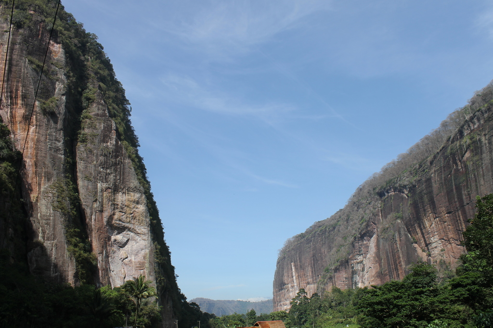

Manfaat Proyek Perubahan

Dengan dilaksanakannya proyek perubahan ini, diharapkan dapat memberikan manfaat antara lain sebagai berikut :
- Adanya prioritas daerah dalam pengembangan kepariwisataan di Lembah Harau Kabupaten Lima Puluh Kota
- Terpetakannya program dan kegiatan prioritas yang akan dilakukan dalam upaya pengembangan kawasan Lembah Harau
- Teridentifikasinya tugas dan fungsi OPD dalam pengembangan kawasan Lembah Harau
- Terciptanya sinergitas antar OPD dalam membangun kepariwisataan Lembah Harau
- Terciptanya komitmen bersama untuk mewujudkan Lembah Harau yang mendunia pada tahun 2021.